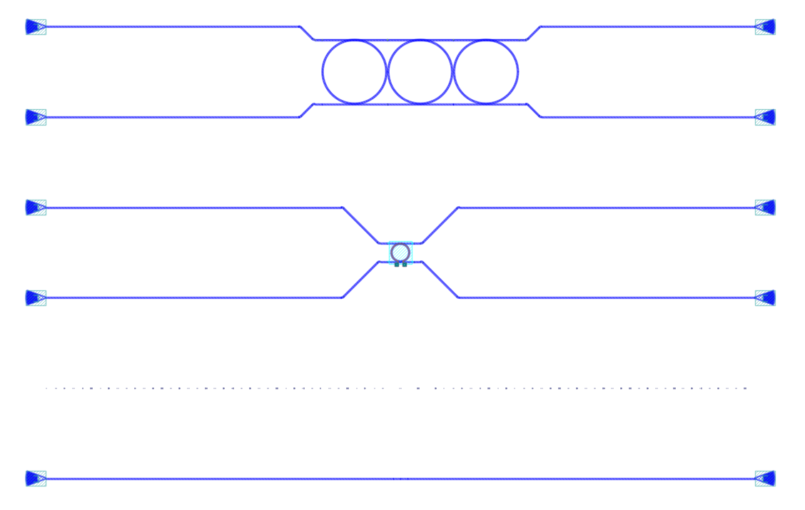

Module gpdk.routing.comp_scan.comp_scan
Expand source code
import math
from dataclasses import dataclass
from functools import partial
from typing import Any, Callable, Iterable, List, Optional, Protocol, Sequence, Tuple, cast
from fnpcell import all as fp
from gpdk.components.sbend.sbend import SBend
from gpdk.components.straight.straight import Straight
from gpdk.routing.auto_transitioned.auto_transitioned import AutoTransitioned
from gpdk.routing.extended.extended import Extended
from gpdk.technology import get_technology
from gpdk.util import all as util
class DeviceAdapter(Protocol):
def __call__(self, device: fp.IDevice) -> fp.IDevice:
...
class FiberCouplerFactory(Protocol):
def __call__(self, at: fp.IRay, device: fp.IDevice) -> Tuple[fp.IDevice, str]:
...
class ConstFiberCouplerFactory(FiberCouplerFactory):
def __init__(self, coupler: fp.IDevice, port: Optional[str]):
self.coupler = coupler
self.port = port
def __call__(self, at: fp.IRay, device: fp.IDevice) -> Tuple[fp.IDevice, str]:
coupler = self.coupler
port = self.port or "op_0"
return (coupler, port)
class Block:
def __init__(
self,
content: fp.ICellRef,
*,
offset: Tuple[float, float] = (0, 0),
repeat: int = 1,
bend_factory: Optional[fp.IBendWaveguideFactory] = None,
bend_factories: Optional[Callable[[fp.IWaveguideType], fp.IBendWaveguideFactory]] = None,
) -> None:
self.content = content
self.offset = offset
self.repeat = repeat
self.bend_factory = bend_factory
self.bend_factories = bend_factories
class Alignment(Block):
def __init__(
self,
*,
offset: Tuple[float, float] = (0, 0),
waveguide_type: fp.IWaveguideType,
) -> None:
super().__init__(
content=fp.Device(
name="Alignment",
content=[],
ports=[
fp.Port(name="op_0", position=(0, 0), orientation=0, waveguide_type=waveguide_type),
fp.Port(name="op_1", position=(0, 0), orientation=math.pi, waveguide_type=waveguide_type),
],
),
offset=offset,
)
class Title(Block):
def __init__(
self,
content: str,
*,
gap: float = 20,
font_size: float = 5,
layer: fp.ILayer,
) -> None:
super().__init__(
content=fp.Device(
name="Title",
content=[
fp.el.Label(
content,
font_size=font_size,
layer=layer,
),
],
ports=[],
),
)
self.gap = gap
class Blank(Block):
def __init__(
self,
*,
left: int = 1,
right: int = 1,
) -> None:
super().__init__(
content=fp.Device(name="Blank", content=[], ports=[]),
)
self.left = left
self.right = right
def _get_ports_center_y(ports: Iterable[fp.IPort]):
ys = tuple(p.position[1] for p in ports)
return (min(ys) + max(ys)) / 2
def _get_block_content(block: Block, left_y: float, right_y: float, spacing: float, device_adapter: DeviceAdapter):
SHORT_STRAIGHT = 1
ox, oy = block.offset
device = block.content
left_ports = util.ports.get_left_ports(device, reverse=True)
right_ports = util.ports.get_right_ports(device, reverse=True)
center_y = _get_ports_center_y(left_ports + right_ports)
left_y2 = left_y + (len(left_ports) - 1) * spacing
right_y2 = right_y + (len(right_ports) - 1) * spacing
y = (min(left_y, right_y) + max(left_y2, right_y2)) / 2 - center_y
if block.repeat > 1:
prev = device
joints: List[Tuple[fp.IOwnedTerminal, fp.IOwnedTerminal]] = []
for _ in range(1, block.repeat):
curr = prev.h_mirrored() # device.h_mirrored() if i % 2 else device.translated(0, 0)
right_ports = util.ports.get_right_ports(prev, reverse=True)
left_ports = util.ports.get_left_ports(curr, reverse=True)
for a, b in zip(right_ports, left_ports):
s = Straight(length=SHORT_STRAIGHT, waveguide_type=a.waveguide_type)
joints.append(a <= s["op_0"])
joints.append(s["op_1"] <= b)
prev = curr
left_ports = util.ports.get_left_ports(device, reverse=True)
right_ports = list(util.ports.get_right_ports(prev, reverse=False))
ports = [port.with_name(f"op_{i}") for i, port in enumerate(left_ports + right_ports)]
distance = fp.distance_between(left_ports[0].position, right_ports[0].position)
block_content = fp.Connected(joints=joints, ports=ports)
tx, ty = -distance / 2 + ox, y + oy
else:
block_content = device
tx, ty = 0 + ox, y + oy
return device_adapter(device=block_content).translated(tx, ty)
@fp.pcell_class()
@dataclass(eq=False)
class CompScan(fp.PCell):
"""
Attributes:
max_lines: Optional, max lines, raise error if exceeded
blocks: blocks of devices
width: defaults to 2000, total width between grating couplers
spacing: defaults to 127, spacing between lines
bend_degrees: defaults to 45, central angle of generated bend
bend_factory: Optional, will be used to generate all bends if provided
bend_factories: Optional, providing `IBendWaveguideFactory` for each waveguide type
waveguide_type: Optional, type of generated waveguide
connection_type: Optional, type of generated connection straight
device_connection_length: defaults to 20, minimum distance between device and sbend
min_io_connection_length: defaults to 20, minimum distance between grating coupler and sbend
Examples:
```python
TECH = get_technology()
# ...
device = CompScan(spacing=255, width=2000, blocks=blocks)
fp.plot(device)
```

"""
fiber_coupler_factory: FiberCouplerFactory = fp.Param().as_field()
fiber_coupler_adapter: Optional[fp.IDevice] = fp.DeviceParam(required=False).as_field()
fiber_coupler_adapter_port: Optional[str] = fp.TextParam(required=False).as_field()
fiber_coupler_v_mirrored: Sequence[bool] = fp.Param(default=(False, False)).as_field()
max_lines: Optional[int] = fp.PositiveIntParam(required=False).as_field()
blocks: Sequence[Block] = fp.ListParam(element_type=Block, immutable=True).as_field()
width: float = fp.PositiveFloatParam(default=2000).as_field()
spacing: float = fp.PositiveFloatParam(default=127).as_field()
bend_degrees: float = fp.DegreeParam(default=45).as_field()
bend_factory: Optional[fp.IBendWaveguideFactory] = fp.Param(required=False).as_field()
bend_factories: Optional[Callable[[fp.IWaveguideType], fp.IBendWaveguideFactory]] = fp.Param(required=False).as_field()
waveguide_type: Optional[fp.IWaveguideType] = fp.WaveguideTypeParam(required=False).as_field()
connection_type: Optional[fp.IWaveguideType] = fp.WaveguideTypeParam(required=False).as_field()
device_connection_length: float = fp.PositiveFloatParam(default=20).as_field()
min_io_connection_length: float = fp.PositiveFloatParam(default=20).as_field()
def _default_fiber_coupler_factory(self):
if self.fiber_coupler_adapter is not None:
return ConstFiberCouplerFactory(self.fiber_coupler_adapter, self.fiber_coupler_adapter_port or "op_0")
return None
def __post_pcell_init__(self):
assert len(self.fiber_coupler_v_mirrored) == 2, "`fiber_coupler_v_mirrored` must have its length equals to 2"
def build(self) -> Tuple[fp.InstanceSet, fp.ElementSet, fp.PortSet]:
insts, elems, ports = super().build()
TECH = get_technology()
fiber_coupler_factory = self.fiber_coupler_factory
left_v_mirrored, right_v_mirrored = self.fiber_coupler_v_mirrored
max_lines = self.max_lines
blocks = self.blocks
width = self.width
spacing = self.spacing
bend_degrees = self.bend_degrees
default_bend_factory = self.bend_factory
default_bend_factories = self.bend_factories
waveguide_type = self.waveguide_type
connection_type = self.connection_type
device_connection_length = self.device_connection_length
min_io_connection_length = self.min_io_connection_length
SHORT_STRAIGHT = 0.1
content: List[fp.ICellRef] = []
left_x = -width / 2
right_x = width / 2
left_y: float = 0
right_y: float = 0
links: List[
Tuple[
Tuple[fp.IOwnedPort, fp.IOwnedPort], str, Optional[fp.IBendWaveguideFactory], Optional[Callable[[fp.IWaveguideType], fp.IBendWaveguideFactory]]
]
] = []
total_lines = 0
if connection_type is None:
connection_type = waveguide_type
for block in blocks:
assert isinstance(block, Block)
y = max(left_y, right_y)
if isinstance(block, Title):
label: Any = block.content.cell.content[0]
distance, _ = label.size
count = int(width / (distance + block.gap))
labels: List[fp.IElement] = []
for i in range(count):
labels.append(label.translated(-width / 2 + i * (distance + block.gap), y))
content.append(fp.Device(name="Title", content=labels, ports=[]))
left_y = y + spacing
right_y = y + spacing
continue
if isinstance(block, Blank):
left_y += block.left * spacing
right_y += block.right * spacing
continue
block_bend_factory = block.bend_factory
block_bend_factories = block.bend_factories
bend_factory = block_bend_factory or default_bend_factory
bend_factories = block_bend_factories or default_bend_factories
device_adapter = cast(DeviceAdapter, partial(Extended, waveguide_type=waveguide_type, lengths={"*": device_connection_length}))
instance = _get_block_content(block, left_y, right_y, spacing, device_adapter)
content.append(instance)
left_ports = util.ports.get_left_ports(instance, reverse=True)
right_ports = util.ports.get_right_ports(instance, reverse=True)
for left_port in left_ports:
left_gc_at = fp.Waypoint(left_x, left_y, 180)
left_gc, left_gc_port = fiber_coupler_factory(at=left_gc_at, device=instance)
if left_v_mirrored:
left_gc = left_gc.v_mirrored()
left_gc_instance = left_gc if waveguide_type is None else AutoTransitioned(device=left_gc, waveguide_types={"*": waveguide_type})
left_gc_transition_length = fp.distance_between(left_gc[left_gc_port].position, left_gc_instance[left_gc_port].position)
left_gc_instance = fp.place(left_gc_instance, left_gc_port, at=left_gc_at.advanced(-left_gc_transition_length))
content.append(left_gc_instance)
left_y += spacing
turning_angle = fp.normalize_angle(math.pi - left_port.orientation)
if fp.is_nonzero(turning_angle):
left_port = util.links.bend(
TECH,
content,
start=left_port,
radians=turning_angle,
bend_factory=bend_factory or bend_factories and bend_factories(left_port.waveguide_type),
)
left_port = util.links.straight(TECH, content, start=left_port, length=SHORT_STRAIGHT)
links.append((left_port <= cast(fp.IOwnedPort, left_gc_instance[left_gc_port]), "left", bend_factory, bend_factories))
for right_port in right_ports:
right_gc_at = fp.Waypoint(right_x, right_y, 0)
right_gc, right_gc_port = fiber_coupler_factory(at=right_gc_at, device=instance)
if right_v_mirrored:
right_gc = right_gc.v_mirrored()
right_gc_instance = right_gc if waveguide_type is None else AutoTransitioned(device=right_gc, waveguide_types={"*": waveguide_type})
right_gc_transition_length = fp.distance_between(right_gc[right_gc_port].position, right_gc_instance[right_gc_port].position)
right_gc_instance = fp.place(right_gc_instance, right_gc_port, at=right_gc_at.advanced(-right_gc_transition_length))
content.append(right_gc_instance)
right_y += spacing
turning_angle = fp.normalize_angle(0 - right_port.orientation)
if fp.is_nonzero(turning_angle):
right_port = util.links.bend(
TECH,
content,
start=right_port,
radians=turning_angle,
bend_factory=bend_factory or bend_factories and bend_factories(right_port.waveguide_type),
)
right_port = util.links.straight(TECH, content, start=right_port, length=SHORT_STRAIGHT)
links.append((right_port <= cast(fp.IOwnedPort, right_gc_instance[right_gc_port]), "right", bend_factory, bend_factories))
total_lines += max(len(left_ports), len(right_ports))
if max_lines is not None:
assert total_lines <= max_lines, f"exceed max lines: {max_lines}, got: {total_lines}"
for (dev, gc), p, bend_factory, bend_factories in links:
if p == "left":
x0, y0 = gc.position
x1, y1 = dev.position
else:
x0, y0 = dev.position
x1, y1 = gc.position
length = x1 - x0
height = y1 - y0
end_type = waveguide_type
if fp.is_nonzero(height):
sbend_type = waveguide_type or dev.waveguide_type
sbend = SBend(
height=height,
bend_degrees=bend_degrees,
max_distance=length - min_io_connection_length,
waveguide_type=sbend_type,
bend_factory=bend_factory or (bend_factories and bend_factories(sbend_type)) or sbend_type.bend_factory,
)
sbend_distance = abs(sbend["op_1"].position[0] - sbend["op_0"].position[0])
sbend = fp.place(sbend, "op_1" if p == "left" else "op_0", at=dev.position)
content.append(sbend)
length -= sbend_distance
end_type = sbend_type
util.links.straight(TECH, content, start=gc, length=length, link_type=connection_type, end_type=end_type)
insts += content
return insts, elems, ports
class CompScanBuilder:
def __init__(
self,
*,
name: Optional[str] = None,
fiber_coupler_factory: Optional[FiberCouplerFactory] = None,
fiber_coupler_adapter: Optional[fp.IDevice] = None,
fiber_coupler_v_mirrored: Sequence[bool] = (False, False),
max_lines: Optional[int] = None,
width: float = 2000,
spacing: float = 127,
waveguide_type: Optional[fp.IWaveguideType] = None,
bend_degrees: Optional[float] = None,
connection_type: Optional[fp.IWaveguideType] = None,
device_connection_length: float = 20,
min_io_connection_length: float = 20,
bend_factory: Optional[fp.IBendWaveguideFactory] = None,
bend_factories: Optional[Callable[[fp.IWaveguideType], fp.IBendWaveguideFactory]] = None,
) -> None:
self.name = name
self.fiber_coupler_factory = fiber_coupler_factory
self.fiber_coupler_adapter = fiber_coupler_adapter
self.fiber_coupler_v_mirrored = fiber_coupler_v_mirrored
self.max_lines = max_lines
self.width = width
self.spacing = spacing
self.waveguide_type = waveguide_type
self.bend_degrees = bend_degrees
self.connection_type = connection_type
self.device_connection_length = device_connection_length
self.min_io_connection_length = min_io_connection_length
self.bend_factory = bend_factory
self.bend_factories = bend_factories
self.blocks = [] # type: List[Block]
def build(self, transform: fp.Affine2D = fp.Affine2D.identity()):
params = dict(
name=self.name or "",
fiber_coupler_factory=self.fiber_coupler_factory,
fiber_coupler_adapter=self.fiber_coupler_adapter,
fiber_coupler_v_mirrored=self.fiber_coupler_v_mirrored,
max_lines=self.max_lines,
blocks=self.blocks,
width=self.width,
spacing=self.spacing,
waveguide_type=self.waveguide_type,
connection_type=self.connection_type,
device_connection_length=self.device_connection_length,
min_io_connection_length=self.min_io_connection_length,
bend_factory=self.bend_factory,
bend_factories=self.bend_factories,
transform=transform,
)
for key, value in list(params.items()):
if value is None:
del params[key]
return CompScan(**params)
def add_block(
self,
content: fp.IDevice,
*,
offset: Tuple[float, float] = (0, 0),
repeat: int = 1,
bend_factory: Optional[fp.IBendWaveguideFactory] = None,
bend_factories: Optional[Callable[[fp.IWaveguideType], fp.IBendWaveguideFactory]] = None,
):
self.blocks.append(Block(content, offset=offset, repeat=repeat, bend_factory=bend_factory, bend_factories=bend_factories))
def add_alignment(self, *, offset: Tuple[float, float] = (0, 0), waveguide_type: Optional[fp.IWaveguideType] = None):
waveguide_type = waveguide_type or self.waveguide_type
assert waveguide_type is not None, "waveguide_type must be supplied"
self.blocks.append(Alignment(offset=offset, waveguide_type=waveguide_type))
def add_title(self, content: str, *, gap: float = 20, font_size: float = 5, layer: fp.ILayer):
self.blocks.append(Title(content, gap=gap, font_size=font_size, layer=layer))
def add_blank(self, left: int = 1, right: int = 1):
self.blocks.append(Blank(left=left, right=right))
if __name__ == "__main__":
from pathlib import Path
gds_file = Path(__file__).parent / "local" / Path(__file__).with_suffix(".gds").name
library = fp.Library()
TECH = get_technology()
# =============================================================
from gpdk.components.fixed_terminator_te_1550.fixed_terminator_te_1550 import Fixed_Terminator_TE_1550
from gpdk.components.ring_filter.ring_filter import RingFilter
from gpdk.components.ring_resonator.ring_resonator import RingResonator
from gpdk.routing.extended.extended import Extended
from gpdk.technology.waveguide_factory import EulerBendFactory
from gpdk.components.grating_coupler.grating_coupler import GratingCoupler
def gc_factory(at: fp.IRay, device: fp.IDevice):
gc = GratingCoupler() # type: ignore
return gc, "op_0"
def bend_factories(waveguide_type: fp.IWaveguideType):
if waveguide_type == TECH.WG.FWG.C.WIRE:
return EulerBendFactory(radius_min=35, l_max=35, waveguide_type=waveguide_type)
elif waveguide_type == TECH.WG.SWG.C.EXPANDED:
return EulerBendFactory(radius_min=55, l_max=35, waveguide_type=waveguide_type)
elif waveguide_type == TECH.WG.SWG.C.WIRE:
return EulerBendFactory(radius_min=45, l_max=35, waveguide_type=waveguide_type)
return waveguide_type.bend_factory
def get_ring_resonator_with_terminator(ring_radius: float):
terminator = Fixed_Terminator_TE_1550(waveguide_type=TECH.WG.FWG.C.WIRE)
ring_resonator = RingResonator(ring_radius=ring_radius, ring_type=TECH.WG.FWG.C.WIRE)
return Extended(
device=fp.Connected(
joints=[ring_resonator["op_2"] <= terminator["op_0"]], ports=[ring_resonator["op_0"], ring_resonator["op_1"], ring_resonator["op_3"]]
),
lengths={"*": 20},
)
blocks = [
Alignment(
waveguide_type=TECH.WG.FWG.C.WIRE,
),
Title(
"TEST TITLE",
layer=TECH.LAYER.LABEL_DRW,
),
Block(get_ring_resonator_with_terminator(25)),
Blank(left=0, right=1),
Block(
get_ring_resonator_with_terminator(50),
repeat=3,
),
Block(
get_ring_resonator_with_terminator(75),
repeat=3,
),
Block(get_ring_resonator_with_terminator(90), bend_factories=bend_factories),
Blank(left=0, right=1),
Block(
RingFilter(
ring_radius=25,
waveguide_type=TECH.WG.FWG.C.WIRE,
)
),
Block(
RingResonator(ring_radius=90, ring_type=TECH.WG.FWG.C.WIRE),
repeat=3,
),
]
def term_factory(at: fp.IRay, device: fp.IDevice):
from gpdk.components.fixed_terminator_te_1550.fixed_terminator_te_1550 import Fixed_Terminator_TE_1550
instance = Fixed_Terminator_TE_1550().h_mirrored() # type: ignore
return instance, "op_0"
library += CompScan(name="comp_scan", spacing=255, width=2000, blocks=blocks, fiber_coupler_factory=term_factory)
library += CompScan(name="comp_scan", spacing=255, width=2000, blocks=blocks, fiber_coupler_adapter=Fixed_Terminator_TE_1550())
library += CompScan(name="comp_scan", spacing=255, width=2000, blocks=blocks, bend_factories=bend_factories, fiber_coupler_factory=gc_factory)
library += CompScan(
name="comp_scan",
spacing=255,
width=2000,
blocks=blocks,
bend_factories=bend_factories,
waveguide_type=TECH.WG.SWG.C.EXPANDED,
bend_factory=TECH.WG.SWG.C.WIRE.bend_factory,
connection_type=TECH.WG.MWG.C.WIRE,
fiber_coupler_factory=gc_factory,
)
# =============================================================
fp.export_gds(library, file=gds_file)
# fp.plot(library)Classes
class Alignment (*, offset: Tuple[float, float] = (0, 0), waveguide_type: fnpcell.interfaces.IWaveguideType)-
Expand source code
class Alignment(Block): def __init__( self, *, offset: Tuple[float, float] = (0, 0), waveguide_type: fp.IWaveguideType, ) -> None: super().__init__( content=fp.Device( name="Alignment", content=[], ports=[ fp.Port(name="op_0", position=(0, 0), orientation=0, waveguide_type=waveguide_type), fp.Port(name="op_1", position=(0, 0), orientation=math.pi, waveguide_type=waveguide_type), ], ), offset=offset, )Ancestors
class Blank (*, left: int = 1, right: int = 1)-
Expand source code
class Blank(Block): def __init__( self, *, left: int = 1, right: int = 1, ) -> None: super().__init__( content=fp.Device(name="Blank", content=[], ports=[]), ) self.left = left self.right = rightAncestors
class Block (content: fnpcell.interfaces.ICellRef, *, offset: Tuple[float, float] = (0, 0), repeat: int = 1, bend_factory: Optional[fnpcell.interfaces.IBendWaveguideFactory] = None, bend_factories: Optional[Callable[[fnpcell.interfaces.IWaveguideType], fnpcell.interfaces.IBendWaveguideFactory]] = None)-
Expand source code
class Block: def __init__( self, content: fp.ICellRef, *, offset: Tuple[float, float] = (0, 0), repeat: int = 1, bend_factory: Optional[fp.IBendWaveguideFactory] = None, bend_factories: Optional[Callable[[fp.IWaveguideType], fp.IBendWaveguideFactory]] = None, ) -> None: self.content = content self.offset = offset self.repeat = repeat self.bend_factory = bend_factory self.bend_factories = bend_factoriesSubclasses
class CompScan (name: str = None, bands: Optional[FrozenSet[fnpcell.interfaces.IBand]] = None, patches: Tuple[fnpcell.interfaces.IElement, ...] = (), port_names: Sequence[Union[None, str, fnpcell.interfaces.Hidden]] = (), transform: fnpcell.transform.Affine2D = None, fiber_coupler_factory: FiberCouplerFactory = None, fiber_coupler_adapter: Optional[fnpcell.interfaces.ICellRef] = None, fiber_coupler_adapter_port: Optional[str] = None, fiber_coupler_v_mirrored: Sequence[bool] = (False, False), max_lines: Optional[int] = None, blocks: Sequence[Block] = None, width: float = 2000, spacing: float = 127, bend_degrees: float = 45, bend_factory: Optional[fnpcell.interfaces.IBendWaveguideFactory] = None, bend_factories: Optional[Callable[[fnpcell.interfaces.IWaveguideType], fnpcell.interfaces.IBendWaveguideFactory]] = None, waveguide_type: Optional[fnpcell.interfaces.IWaveguideType] = None, connection_type: Optional[fnpcell.interfaces.IWaveguideType] = None, device_connection_length: float = 20, min_io_connection_length: float = 20)-
Attributes
max_lines- Optional, max lines, raise error if exceeded
blocks- blocks of devices
width- defaults to 2000, total width between grating couplers
spacing- defaults to 127, spacing between lines
bend_degrees- defaults to 45, central angle of generated bend
bend_factory- Optional, will be used to generate all bends if provided
bend_factories- Optional, providing
IBendWaveguideFactoryfor each waveguide type waveguide_type- Optional, type of generated waveguide
connection_type- Optional, type of generated connection straight
device_connection_length- defaults to 20, minimum distance between device and sbend
min_io_connection_length- defaults to 20, minimum distance between grating coupler and sbend
Examples:
TECH = get_technology() # ... device = CompScan(spacing=255, width=2000, blocks=blocks) fp.plot(device)
Expand source code
class CompScan(fp.PCell): """ Attributes: max_lines: Optional, max lines, raise error if exceeded blocks: blocks of devices width: defaults to 2000, total width between grating couplers spacing: defaults to 127, spacing between lines bend_degrees: defaults to 45, central angle of generated bend bend_factory: Optional, will be used to generate all bends if provided bend_factories: Optional, providing `IBendWaveguideFactory` for each waveguide type waveguide_type: Optional, type of generated waveguide connection_type: Optional, type of generated connection straight device_connection_length: defaults to 20, minimum distance between device and sbend min_io_connection_length: defaults to 20, minimum distance between grating coupler and sbend Examples: ```python TECH = get_technology() # ... device = CompScan(spacing=255, width=2000, blocks=blocks) fp.plot(device) ```  """ fiber_coupler_factory: FiberCouplerFactory = fp.Param().as_field() fiber_coupler_adapter: Optional[fp.IDevice] = fp.DeviceParam(required=False).as_field() fiber_coupler_adapter_port: Optional[str] = fp.TextParam(required=False).as_field() fiber_coupler_v_mirrored: Sequence[bool] = fp.Param(default=(False, False)).as_field() max_lines: Optional[int] = fp.PositiveIntParam(required=False).as_field() blocks: Sequence[Block] = fp.ListParam(element_type=Block, immutable=True).as_field() width: float = fp.PositiveFloatParam(default=2000).as_field() spacing: float = fp.PositiveFloatParam(default=127).as_field() bend_degrees: float = fp.DegreeParam(default=45).as_field() bend_factory: Optional[fp.IBendWaveguideFactory] = fp.Param(required=False).as_field() bend_factories: Optional[Callable[[fp.IWaveguideType], fp.IBendWaveguideFactory]] = fp.Param(required=False).as_field() waveguide_type: Optional[fp.IWaveguideType] = fp.WaveguideTypeParam(required=False).as_field() connection_type: Optional[fp.IWaveguideType] = fp.WaveguideTypeParam(required=False).as_field() device_connection_length: float = fp.PositiveFloatParam(default=20).as_field() min_io_connection_length: float = fp.PositiveFloatParam(default=20).as_field() def _default_fiber_coupler_factory(self): if self.fiber_coupler_adapter is not None: return ConstFiberCouplerFactory(self.fiber_coupler_adapter, self.fiber_coupler_adapter_port or "op_0") return None def __post_pcell_init__(self): assert len(self.fiber_coupler_v_mirrored) == 2, "`fiber_coupler_v_mirrored` must have its length equals to 2" def build(self) -> Tuple[fp.InstanceSet, fp.ElementSet, fp.PortSet]: insts, elems, ports = super().build() TECH = get_technology() fiber_coupler_factory = self.fiber_coupler_factory left_v_mirrored, right_v_mirrored = self.fiber_coupler_v_mirrored max_lines = self.max_lines blocks = self.blocks width = self.width spacing = self.spacing bend_degrees = self.bend_degrees default_bend_factory = self.bend_factory default_bend_factories = self.bend_factories waveguide_type = self.waveguide_type connection_type = self.connection_type device_connection_length = self.device_connection_length min_io_connection_length = self.min_io_connection_length SHORT_STRAIGHT = 0.1 content: List[fp.ICellRef] = [] left_x = -width / 2 right_x = width / 2 left_y: float = 0 right_y: float = 0 links: List[ Tuple[ Tuple[fp.IOwnedPort, fp.IOwnedPort], str, Optional[fp.IBendWaveguideFactory], Optional[Callable[[fp.IWaveguideType], fp.IBendWaveguideFactory]] ] ] = [] total_lines = 0 if connection_type is None: connection_type = waveguide_type for block in blocks: assert isinstance(block, Block) y = max(left_y, right_y) if isinstance(block, Title): label: Any = block.content.cell.content[0] distance, _ = label.size count = int(width / (distance + block.gap)) labels: List[fp.IElement] = [] for i in range(count): labels.append(label.translated(-width / 2 + i * (distance + block.gap), y)) content.append(fp.Device(name="Title", content=labels, ports=[])) left_y = y + spacing right_y = y + spacing continue if isinstance(block, Blank): left_y += block.left * spacing right_y += block.right * spacing continue block_bend_factory = block.bend_factory block_bend_factories = block.bend_factories bend_factory = block_bend_factory or default_bend_factory bend_factories = block_bend_factories or default_bend_factories device_adapter = cast(DeviceAdapter, partial(Extended, waveguide_type=waveguide_type, lengths={"*": device_connection_length})) instance = _get_block_content(block, left_y, right_y, spacing, device_adapter) content.append(instance) left_ports = util.ports.get_left_ports(instance, reverse=True) right_ports = util.ports.get_right_ports(instance, reverse=True) for left_port in left_ports: left_gc_at = fp.Waypoint(left_x, left_y, 180) left_gc, left_gc_port = fiber_coupler_factory(at=left_gc_at, device=instance) if left_v_mirrored: left_gc = left_gc.v_mirrored() left_gc_instance = left_gc if waveguide_type is None else AutoTransitioned(device=left_gc, waveguide_types={"*": waveguide_type}) left_gc_transition_length = fp.distance_between(left_gc[left_gc_port].position, left_gc_instance[left_gc_port].position) left_gc_instance = fp.place(left_gc_instance, left_gc_port, at=left_gc_at.advanced(-left_gc_transition_length)) content.append(left_gc_instance) left_y += spacing turning_angle = fp.normalize_angle(math.pi - left_port.orientation) if fp.is_nonzero(turning_angle): left_port = util.links.bend( TECH, content, start=left_port, radians=turning_angle, bend_factory=bend_factory or bend_factories and bend_factories(left_port.waveguide_type), ) left_port = util.links.straight(TECH, content, start=left_port, length=SHORT_STRAIGHT) links.append((left_port <= cast(fp.IOwnedPort, left_gc_instance[left_gc_port]), "left", bend_factory, bend_factories)) for right_port in right_ports: right_gc_at = fp.Waypoint(right_x, right_y, 0) right_gc, right_gc_port = fiber_coupler_factory(at=right_gc_at, device=instance) if right_v_mirrored: right_gc = right_gc.v_mirrored() right_gc_instance = right_gc if waveguide_type is None else AutoTransitioned(device=right_gc, waveguide_types={"*": waveguide_type}) right_gc_transition_length = fp.distance_between(right_gc[right_gc_port].position, right_gc_instance[right_gc_port].position) right_gc_instance = fp.place(right_gc_instance, right_gc_port, at=right_gc_at.advanced(-right_gc_transition_length)) content.append(right_gc_instance) right_y += spacing turning_angle = fp.normalize_angle(0 - right_port.orientation) if fp.is_nonzero(turning_angle): right_port = util.links.bend( TECH, content, start=right_port, radians=turning_angle, bend_factory=bend_factory or bend_factories and bend_factories(right_port.waveguide_type), ) right_port = util.links.straight(TECH, content, start=right_port, length=SHORT_STRAIGHT) links.append((right_port <= cast(fp.IOwnedPort, right_gc_instance[right_gc_port]), "right", bend_factory, bend_factories)) total_lines += max(len(left_ports), len(right_ports)) if max_lines is not None: assert total_lines <= max_lines, f"exceed max lines: {max_lines}, got: {total_lines}" for (dev, gc), p, bend_factory, bend_factories in links: if p == "left": x0, y0 = gc.position x1, y1 = dev.position else: x0, y0 = dev.position x1, y1 = gc.position length = x1 - x0 height = y1 - y0 end_type = waveguide_type if fp.is_nonzero(height): sbend_type = waveguide_type or dev.waveguide_type sbend = SBend( height=height, bend_degrees=bend_degrees, max_distance=length - min_io_connection_length, waveguide_type=sbend_type, bend_factory=bend_factory or (bend_factories and bend_factories(sbend_type)) or sbend_type.bend_factory, ) sbend_distance = abs(sbend["op_1"].position[0] - sbend["op_0"].position[0]) sbend = fp.place(sbend, "op_1" if p == "left" else "op_0", at=dev.position) content.append(sbend) length -= sbend_distance end_type = sbend_type util.links.straight(TECH, content, start=gc, length=length, link_type=connection_type, end_type=end_type) insts += content return insts, elems, portsAncestors
- fnpcell.pdk.pcell.PCell
- fnpcell.cell.cell_ref.CellRef
- fnpcell.mixin.transform_mixin.TransformMixin
- fnpcell.interfaces.ICellRef
- fnpcell.interfaces.IUpdatable
- fnpcell.interfaces.IElement
- fnpcell.interfaces.IRunnable
- fnpcell.interfaces.IAffineTransformable
Class variables
var bend_degrees : floatvar bend_factories : Optional[Callable[[fnpcell.interfaces.IWaveguideType], fnpcell.interfaces.IBendWaveguideFactory]]var bend_factory : Optional[fnpcell.interfaces.IBendWaveguideFactory]var blocks : Sequence[Block]var connection_type : Optional[fnpcell.interfaces.IWaveguideType]var device_connection_length : floatvar fiber_coupler_adapter : Optional[fnpcell.interfaces.ICellRef]var fiber_coupler_adapter_port : Optional[str]var fiber_coupler_factory : FiberCouplerFactoryvar fiber_coupler_v_mirrored : Sequence[bool]var max_lines : Optional[int]var min_io_connection_length : floatvar spacing : floatvar waveguide_type : Optional[fnpcell.interfaces.IWaveguideType]var width : float
Methods
def build(self) ‑> Tuple[fnpcell.pdk.collection.InstanceSet, fnpcell.pdk.collection.ElementSet, fnpcell.pdk.collection.PortSet]-
Abstract method must be implemented to build a pcell.
Expand source code
def build(self) -> Tuple[fp.InstanceSet, fp.ElementSet, fp.PortSet]: insts, elems, ports = super().build() TECH = get_technology() fiber_coupler_factory = self.fiber_coupler_factory left_v_mirrored, right_v_mirrored = self.fiber_coupler_v_mirrored max_lines = self.max_lines blocks = self.blocks width = self.width spacing = self.spacing bend_degrees = self.bend_degrees default_bend_factory = self.bend_factory default_bend_factories = self.bend_factories waveguide_type = self.waveguide_type connection_type = self.connection_type device_connection_length = self.device_connection_length min_io_connection_length = self.min_io_connection_length SHORT_STRAIGHT = 0.1 content: List[fp.ICellRef] = [] left_x = -width / 2 right_x = width / 2 left_y: float = 0 right_y: float = 0 links: List[ Tuple[ Tuple[fp.IOwnedPort, fp.IOwnedPort], str, Optional[fp.IBendWaveguideFactory], Optional[Callable[[fp.IWaveguideType], fp.IBendWaveguideFactory]] ] ] = [] total_lines = 0 if connection_type is None: connection_type = waveguide_type for block in blocks: assert isinstance(block, Block) y = max(left_y, right_y) if isinstance(block, Title): label: Any = block.content.cell.content[0] distance, _ = label.size count = int(width / (distance + block.gap)) labels: List[fp.IElement] = [] for i in range(count): labels.append(label.translated(-width / 2 + i * (distance + block.gap), y)) content.append(fp.Device(name="Title", content=labels, ports=[])) left_y = y + spacing right_y = y + spacing continue if isinstance(block, Blank): left_y += block.left * spacing right_y += block.right * spacing continue block_bend_factory = block.bend_factory block_bend_factories = block.bend_factories bend_factory = block_bend_factory or default_bend_factory bend_factories = block_bend_factories or default_bend_factories device_adapter = cast(DeviceAdapter, partial(Extended, waveguide_type=waveguide_type, lengths={"*": device_connection_length})) instance = _get_block_content(block, left_y, right_y, spacing, device_adapter) content.append(instance) left_ports = util.ports.get_left_ports(instance, reverse=True) right_ports = util.ports.get_right_ports(instance, reverse=True) for left_port in left_ports: left_gc_at = fp.Waypoint(left_x, left_y, 180) left_gc, left_gc_port = fiber_coupler_factory(at=left_gc_at, device=instance) if left_v_mirrored: left_gc = left_gc.v_mirrored() left_gc_instance = left_gc if waveguide_type is None else AutoTransitioned(device=left_gc, waveguide_types={"*": waveguide_type}) left_gc_transition_length = fp.distance_between(left_gc[left_gc_port].position, left_gc_instance[left_gc_port].position) left_gc_instance = fp.place(left_gc_instance, left_gc_port, at=left_gc_at.advanced(-left_gc_transition_length)) content.append(left_gc_instance) left_y += spacing turning_angle = fp.normalize_angle(math.pi - left_port.orientation) if fp.is_nonzero(turning_angle): left_port = util.links.bend( TECH, content, start=left_port, radians=turning_angle, bend_factory=bend_factory or bend_factories and bend_factories(left_port.waveguide_type), ) left_port = util.links.straight(TECH, content, start=left_port, length=SHORT_STRAIGHT) links.append((left_port <= cast(fp.IOwnedPort, left_gc_instance[left_gc_port]), "left", bend_factory, bend_factories)) for right_port in right_ports: right_gc_at = fp.Waypoint(right_x, right_y, 0) right_gc, right_gc_port = fiber_coupler_factory(at=right_gc_at, device=instance) if right_v_mirrored: right_gc = right_gc.v_mirrored() right_gc_instance = right_gc if waveguide_type is None else AutoTransitioned(device=right_gc, waveguide_types={"*": waveguide_type}) right_gc_transition_length = fp.distance_between(right_gc[right_gc_port].position, right_gc_instance[right_gc_port].position) right_gc_instance = fp.place(right_gc_instance, right_gc_port, at=right_gc_at.advanced(-right_gc_transition_length)) content.append(right_gc_instance) right_y += spacing turning_angle = fp.normalize_angle(0 - right_port.orientation) if fp.is_nonzero(turning_angle): right_port = util.links.bend( TECH, content, start=right_port, radians=turning_angle, bend_factory=bend_factory or bend_factories and bend_factories(right_port.waveguide_type), ) right_port = util.links.straight(TECH, content, start=right_port, length=SHORT_STRAIGHT) links.append((right_port <= cast(fp.IOwnedPort, right_gc_instance[right_gc_port]), "right", bend_factory, bend_factories)) total_lines += max(len(left_ports), len(right_ports)) if max_lines is not None: assert total_lines <= max_lines, f"exceed max lines: {max_lines}, got: {total_lines}" for (dev, gc), p, bend_factory, bend_factories in links: if p == "left": x0, y0 = gc.position x1, y1 = dev.position else: x0, y0 = dev.position x1, y1 = gc.position length = x1 - x0 height = y1 - y0 end_type = waveguide_type if fp.is_nonzero(height): sbend_type = waveguide_type or dev.waveguide_type sbend = SBend( height=height, bend_degrees=bend_degrees, max_distance=length - min_io_connection_length, waveguide_type=sbend_type, bend_factory=bend_factory or (bend_factories and bend_factories(sbend_type)) or sbend_type.bend_factory, ) sbend_distance = abs(sbend["op_1"].position[0] - sbend["op_0"].position[0]) sbend = fp.place(sbend, "op_1" if p == "left" else "op_0", at=dev.position) content.append(sbend) length -= sbend_distance end_type = sbend_type util.links.straight(TECH, content, start=gc, length=length, link_type=connection_type, end_type=end_type) insts += content return insts, elems, ports
class CompScanBuilder (*, name: Optional[str] = None, fiber_coupler_factory: Optional[FiberCouplerFactory] = None, fiber_coupler_adapter: Optional[fnpcell.interfaces.ICellRef] = None, fiber_coupler_v_mirrored: Sequence[bool] = (False, False), max_lines: Optional[int] = None, width: float = 2000, spacing: float = 127, waveguide_type: Optional[fnpcell.interfaces.IWaveguideType] = None, bend_degrees: Optional[float] = None, connection_type: Optional[fnpcell.interfaces.IWaveguideType] = None, device_connection_length: float = 20, min_io_connection_length: float = 20, bend_factory: Optional[fnpcell.interfaces.IBendWaveguideFactory] = None, bend_factories: Optional[Callable[[fnpcell.interfaces.IWaveguideType], fnpcell.interfaces.IBendWaveguideFactory]] = None)-
Expand source code
class CompScanBuilder: def __init__( self, *, name: Optional[str] = None, fiber_coupler_factory: Optional[FiberCouplerFactory] = None, fiber_coupler_adapter: Optional[fp.IDevice] = None, fiber_coupler_v_mirrored: Sequence[bool] = (False, False), max_lines: Optional[int] = None, width: float = 2000, spacing: float = 127, waveguide_type: Optional[fp.IWaveguideType] = None, bend_degrees: Optional[float] = None, connection_type: Optional[fp.IWaveguideType] = None, device_connection_length: float = 20, min_io_connection_length: float = 20, bend_factory: Optional[fp.IBendWaveguideFactory] = None, bend_factories: Optional[Callable[[fp.IWaveguideType], fp.IBendWaveguideFactory]] = None, ) -> None: self.name = name self.fiber_coupler_factory = fiber_coupler_factory self.fiber_coupler_adapter = fiber_coupler_adapter self.fiber_coupler_v_mirrored = fiber_coupler_v_mirrored self.max_lines = max_lines self.width = width self.spacing = spacing self.waveguide_type = waveguide_type self.bend_degrees = bend_degrees self.connection_type = connection_type self.device_connection_length = device_connection_length self.min_io_connection_length = min_io_connection_length self.bend_factory = bend_factory self.bend_factories = bend_factories self.blocks = [] # type: List[Block] def build(self, transform: fp.Affine2D = fp.Affine2D.identity()): params = dict( name=self.name or "", fiber_coupler_factory=self.fiber_coupler_factory, fiber_coupler_adapter=self.fiber_coupler_adapter, fiber_coupler_v_mirrored=self.fiber_coupler_v_mirrored, max_lines=self.max_lines, blocks=self.blocks, width=self.width, spacing=self.spacing, waveguide_type=self.waveguide_type, connection_type=self.connection_type, device_connection_length=self.device_connection_length, min_io_connection_length=self.min_io_connection_length, bend_factory=self.bend_factory, bend_factories=self.bend_factories, transform=transform, ) for key, value in list(params.items()): if value is None: del params[key] return CompScan(**params) def add_block( self, content: fp.IDevice, *, offset: Tuple[float, float] = (0, 0), repeat: int = 1, bend_factory: Optional[fp.IBendWaveguideFactory] = None, bend_factories: Optional[Callable[[fp.IWaveguideType], fp.IBendWaveguideFactory]] = None, ): self.blocks.append(Block(content, offset=offset, repeat=repeat, bend_factory=bend_factory, bend_factories=bend_factories)) def add_alignment(self, *, offset: Tuple[float, float] = (0, 0), waveguide_type: Optional[fp.IWaveguideType] = None): waveguide_type = waveguide_type or self.waveguide_type assert waveguide_type is not None, "waveguide_type must be supplied" self.blocks.append(Alignment(offset=offset, waveguide_type=waveguide_type)) def add_title(self, content: str, *, gap: float = 20, font_size: float = 5, layer: fp.ILayer): self.blocks.append(Title(content, gap=gap, font_size=font_size, layer=layer)) def add_blank(self, left: int = 1, right: int = 1): self.blocks.append(Blank(left=left, right=right))Methods
def add_alignment(self, *, offset: Tuple[float, float] = (0, 0), waveguide_type: Optional[fnpcell.interfaces.IWaveguideType] = None)-
Expand source code
def add_alignment(self, *, offset: Tuple[float, float] = (0, 0), waveguide_type: Optional[fp.IWaveguideType] = None): waveguide_type = waveguide_type or self.waveguide_type assert waveguide_type is not None, "waveguide_type must be supplied" self.blocks.append(Alignment(offset=offset, waveguide_type=waveguide_type)) def add_blank(self, left: int = 1, right: int = 1)-
Expand source code
def add_blank(self, left: int = 1, right: int = 1): self.blocks.append(Blank(left=left, right=right)) def add_block(self, content: fnpcell.interfaces.ICellRef, *, offset: Tuple[float, float] = (0, 0), repeat: int = 1, bend_factory: Optional[fnpcell.interfaces.IBendWaveguideFactory] = None, bend_factories: Optional[Callable[[fnpcell.interfaces.IWaveguideType], fnpcell.interfaces.IBendWaveguideFactory]] = None)-
Expand source code
def add_block( self, content: fp.IDevice, *, offset: Tuple[float, float] = (0, 0), repeat: int = 1, bend_factory: Optional[fp.IBendWaveguideFactory] = None, bend_factories: Optional[Callable[[fp.IWaveguideType], fp.IBendWaveguideFactory]] = None, ): self.blocks.append(Block(content, offset=offset, repeat=repeat, bend_factory=bend_factory, bend_factories=bend_factories)) def add_title(self, content: str, *, gap: float = 20, font_size: float = 5, layer: fnpcell.interfaces.ILayer)-
Expand source code
def add_title(self, content: str, *, gap: float = 20, font_size: float = 5, layer: fp.ILayer): self.blocks.append(Title(content, gap=gap, font_size=font_size, layer=layer)) def build(self, transform: fnpcell.transform.Affine2D = Affine2D.identity())-
Expand source code
def build(self, transform: fp.Affine2D = fp.Affine2D.identity()): params = dict( name=self.name or "", fiber_coupler_factory=self.fiber_coupler_factory, fiber_coupler_adapter=self.fiber_coupler_adapter, fiber_coupler_v_mirrored=self.fiber_coupler_v_mirrored, max_lines=self.max_lines, blocks=self.blocks, width=self.width, spacing=self.spacing, waveguide_type=self.waveguide_type, connection_type=self.connection_type, device_connection_length=self.device_connection_length, min_io_connection_length=self.min_io_connection_length, bend_factory=self.bend_factory, bend_factories=self.bend_factories, transform=transform, ) for key, value in list(params.items()): if value is None: del params[key] return CompScan(**params)
class ConstFiberCouplerFactory (coupler: fnpcell.interfaces.ICellRef, port: Optional[str])-
Base class for protocol classes.
Protocol classes are defined as::
class Proto(Protocol): def meth(self) -> int: ...Such classes are primarily used with static type checkers that recognize structural subtyping (static duck-typing), for example::
class C: def meth(self) -> int: return 0 def func(x: Proto) -> int: return x.meth() func(C()) # Passes static type checkSee PEP 544 for details. Protocol classes decorated with @typing.runtime_checkable act as simple-minded runtime protocols that check only the presence of given attributes, ignoring their type signatures. Protocol classes can be generic, they are defined as::
class GenProto(Protocol[T]): def meth(self) -> T: ...Expand source code
class ConstFiberCouplerFactory(FiberCouplerFactory): def __init__(self, coupler: fp.IDevice, port: Optional[str]): self.coupler = coupler self.port = port def __call__(self, at: fp.IRay, device: fp.IDevice) -> Tuple[fp.IDevice, str]: coupler = self.coupler port = self.port or "op_0" return (coupler, port)Ancestors
- FiberCouplerFactory
- typing.Protocol
- typing.Generic
class DeviceAdapter (*args, **kwargs)-
Base class for protocol classes.
Protocol classes are defined as::
class Proto(Protocol): def meth(self) -> int: ...Such classes are primarily used with static type checkers that recognize structural subtyping (static duck-typing), for example::
class C: def meth(self) -> int: return 0 def func(x: Proto) -> int: return x.meth() func(C()) # Passes static type checkSee PEP 544 for details. Protocol classes decorated with @typing.runtime_checkable act as simple-minded runtime protocols that check only the presence of given attributes, ignoring their type signatures. Protocol classes can be generic, they are defined as::
class GenProto(Protocol[T]): def meth(self) -> T: ...Expand source code
class DeviceAdapter(Protocol): def __call__(self, device: fp.IDevice) -> fp.IDevice: ...Ancestors
- typing.Protocol
- typing.Generic
class FiberCouplerFactory (*args, **kwargs)-
Base class for protocol classes.
Protocol classes are defined as::
class Proto(Protocol): def meth(self) -> int: ...Such classes are primarily used with static type checkers that recognize structural subtyping (static duck-typing), for example::
class C: def meth(self) -> int: return 0 def func(x: Proto) -> int: return x.meth() func(C()) # Passes static type checkSee PEP 544 for details. Protocol classes decorated with @typing.runtime_checkable act as simple-minded runtime protocols that check only the presence of given attributes, ignoring their type signatures. Protocol classes can be generic, they are defined as::
class GenProto(Protocol[T]): def meth(self) -> T: ...Expand source code
class FiberCouplerFactory(Protocol): def __call__(self, at: fp.IRay, device: fp.IDevice) -> Tuple[fp.IDevice, str]: ...Ancestors
- typing.Protocol
- typing.Generic
Subclasses
class Title (content: str, *, gap: float = 20, font_size: float = 5, layer: fnpcell.interfaces.ILayer)-
Expand source code
class Title(Block): def __init__( self, content: str, *, gap: float = 20, font_size: float = 5, layer: fp.ILayer, ) -> None: super().__init__( content=fp.Device( name="Title", content=[ fp.el.Label( content, font_size=font_size, layer=layer, ), ], ports=[], ), ) self.gap = gapAncestors